3. 基础：安装¶
我们在本书中提及“Python 3”时，我们指的是Anaconda Python发行版中的Python 3。由于Anaconda Python发行版使Python多版本环境和包的安装管理变得方便灵活，并且集成了适合数据分析和科学计算的工具，使其已成为大多数人安装Python的首选。值得注意的是，通过Python官网也可以下载各个版本的Python，但其仅仅包含Python解释器，缺乏必要的科学计算和绘图模块，所以这里我们并不推荐。
Anaconda的最新版本可在其官网 或 清华镜像下载。本讲义所用版本为Anaconda3 2019.10（其中包含Python 3.7.3）。
3.1. 在 Windows 中安装¶
Anaconda的安装过程与Windows平台的其他软件的安装过程无异。具体安装流程如下：
第一步：点击安装包文件，开始我们的安装过程，点击“下一步”。
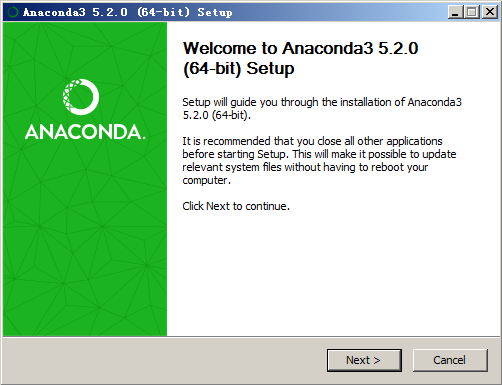
第二步：此处是Anaconda的许可证，点击“同意”才能进入下一步。
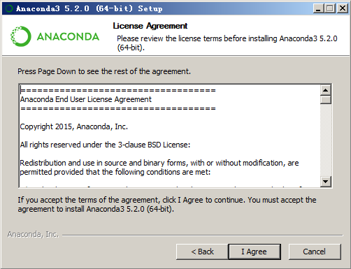
第三步：此处不推荐安装给所有用户，因为需要管理员权限。选择第一个选项后，只有当前的Windows账户可以使用；若选择第二个选项，则所有登录本机的Windows账户均可使用。由于Windows多账户使用场景较少，所以选择第一个选项足以。
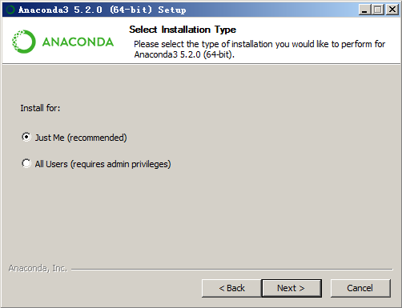
第四步：选择你希望的安装路径，前提是有足够的硬盘空间。考虑到程序本身的大小和今后的使用，建议选择剩余空间10GB以上的分区。

第五步：此处需注意，在这一步中我们 ** 推荐勾选第一个选项 ** 。这一选项的作用是将Python添加到Windows系统的环境变量PATH中，这样就能在终端cmd中直接运行Python。虽然有提示不建议勾选，但是只要系统中只安装一个版本的Python就不会有什么影响。
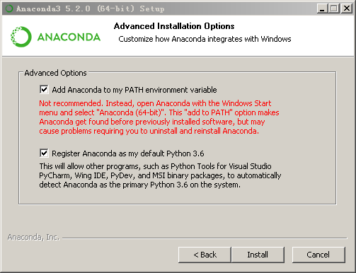
第六步：Anaconda主体安装完毕后会询问是否安装微软的VSCode编辑器，这里我们选择安装，VSCode是微软开发的一款强大的编辑器，开源，有非常丰富的插件来拓展其功能，本书就是在VSCode上配合 `Markdown All in One` 、 `Markdown PDF` 和 `vscode-pdf` 插件编写的。VSCode可以配合相关插件变成强大的Python开发环境。相关技巧，读者可以在网上查询。

第七步：完成安装，点击“完成”。第一个选项勾选后，浏览器会自动打开Anaconda Cloud的网页，读者可以将Python的包、notebook文件、Python项目以及配置好的Python环境上传到Anaconda Cloud上，以供存储和分享；第二个选项勾选后，浏览器会自动打开相关网页让读者了解如何使用Anaconda Python。

第八步：在Windows开始菜单中找到Anaconda Navigator，点击即可启动。Anaconda Navigator是Anaconda Python各项功能的集合，在其中读者可以通过图形界面方便地安装和管理Python环境和包，以及诸如VSCode和Spyder等工具；菜单中的Anaconda Prompt是Anaconda Python的命令行界面，可通过相应的命令实现Anaconda Navigator里的部分功能，比如Python环境和包的安装和管理等，同时也支持Windows系统的命令行指令；Jupyter Notebook能够在浏览器里编辑Python的Notebook文件，能够实现交互式编程；Spyder是Python的IDE，适用于数据处理和科学计算，界面和功能类似于Matlab。
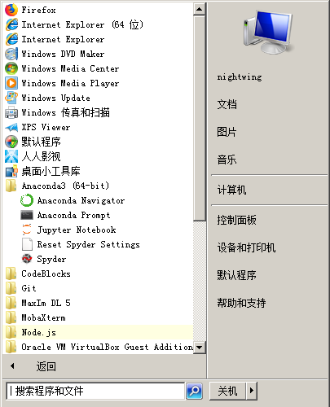

#installation
3.2. 在 GNU/Linux 下安装¶
对于GNU/Linux用户，访问 https://www.anaconda.com/download/ 并下载最新版本的Anaconda Python（64位）。需要注意的是几乎每一个Linux发行版自身就带有某一版本的Python，但一般是不推荐直接使用的，一方面是因为其没有Anaconda Python方便，另一方面是可能会牵扯到Linux系统底层的依赖问题，影响Linux系统的稳定性。具体安装流程如下：
第一步：点击 Terminal 应用快捷方式或通过按下 Ctrl + Alt + T
组合键打开命令行，用 cd Downloads/
命令切换到下载有安装包的文件夹中，通过 ls -l
命令我们发现安装包默认没有可执行权限，所以我们用
chmod a+x Anaconda3-5.2.0-Linux-x86_64.sh
命令赋予安装包可执行权限。之后再用 ls -l
命令查看发现安装包已经可以被执行了，于是使用
./Anaconda3-5.2.0-Linux-x86_64.sh
命令来执行安装包，按照命令行中的英文提示，按下 Enter
回车键开始安装过程。

第二步：按多次 Enter 回车键之后，会被询问是否接受license，输入
yes 之后点击 Enter 回车键。

第三步：正式开始安装过程，耐心等待。这一步无需操作。
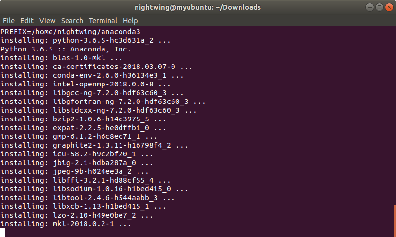
第四步：程序主体安装结束后，会被询问是否将Anaconda
Python加入到环境变量PATH中，这里我们输入 yes 即可，之后点击
Enter回车键继续，方便日后在命令行中的使用。

第五步：和Windows安装过程类似，我们会被询问是否安装微软VSCode编辑器，这里我们推荐安装，输入
yes 即可。 （由于笔者已经安装，所以这里输入 no 掠过了。）

第六步：安装完毕，关闭当前终端，重新开启一个新的终端使得安装生效，输入
python -V
之后按回车键，我们可以看到此时系统已经开始使用Anaconda版本的Python了。
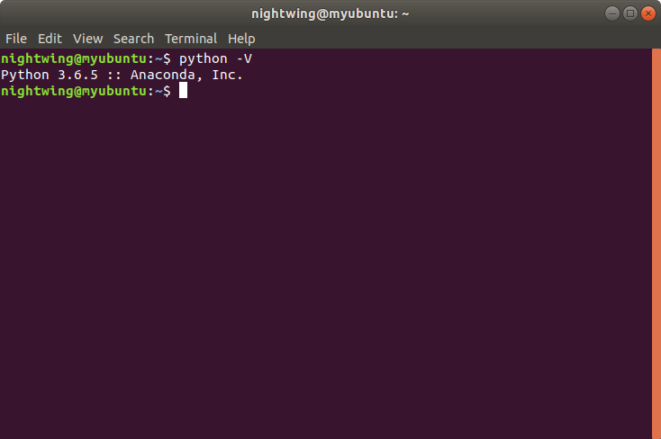
第七步：输入 anaconda-navigator & 开启Anaconda Navigator。

第八步：成功启动，至此安装完毕。值得注意的是与Windows版本不同，Linux版的Anaconda Python安装完毕之后，系统菜单里并没有相应的快捷方式，Anaconda Navigator、Jupyter Notebook和Spyder都得在命令行中启动。
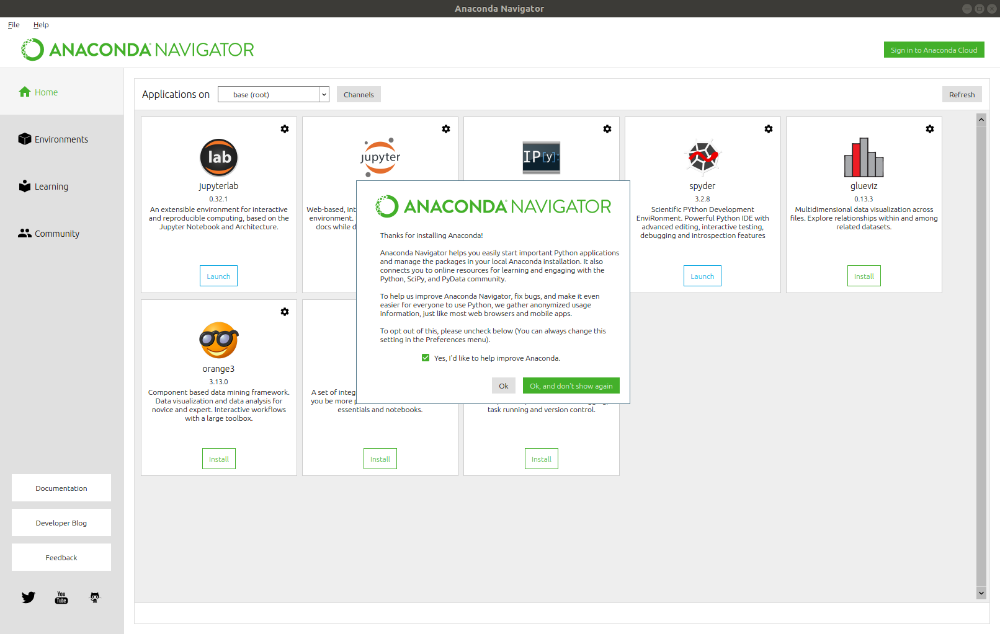
附注：$ 是 Shell
的提示符。根据你电脑所运行的操作系统的设置的不同，它也会有所不同，在之后的内容中我们会使用
$ 符号来代表提示符。
注意：输出的内容取决于你安装的Anaconda Python的版本。
3.3. 在 macOS 下安装¶
对于macOS用户，安装过程和Linux类似。通过按键 Command + Space
（以启动 Spotlight 搜索），输入 Terminal 并按下 Enter
键来启动终端程序。
3.4. Windows 环境下的环境变量设置¶
当我们直接使用终端启动程序时，比如直接输入 Python 然后回车，或者导入一些包时，系统首先需要在一个特定路径搜索，这时候就需要环境变量。不同操作系统下设置环境变量的方法不一样。
1.右键打开 我的电脑 ,点击 属性 。点击 高级系统设置 高级 下面的 环境变量 。
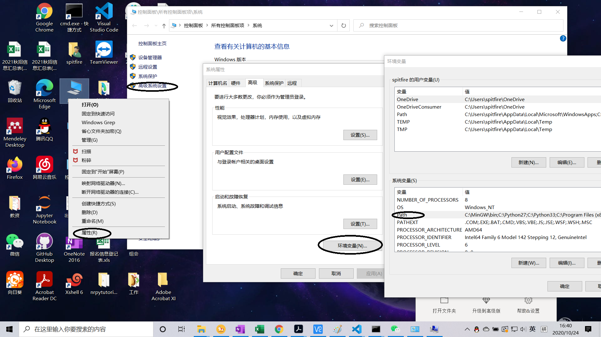
2.在 环境变量 下选择 系统变量 下的 Path，假如你是在 C:\ProgramData\Anaconda3 下安装的Anaconda，添加如下三个变量：C:\ProgramData\Anaconda3 C:\ProgramData\Anaconda3\Library\bin C:\ProgramData\Anaconda3\Scripts。如果在WIN7及以下系统，这三个路径需要使用分号隔开.
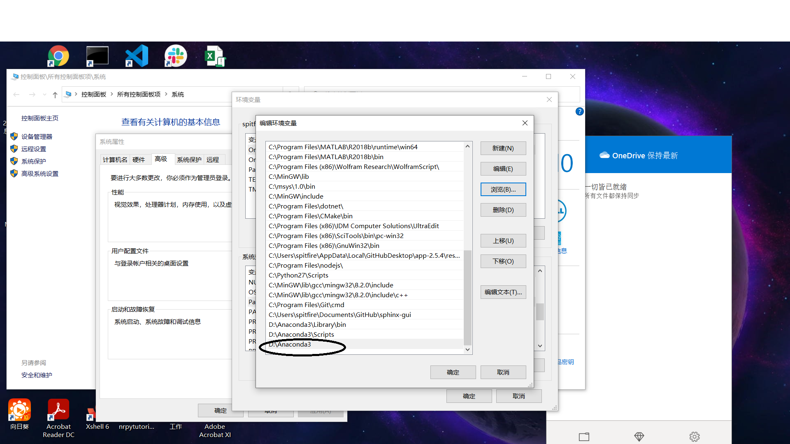
3.点击确定退出
3.5. Linux环境下的环境变量设置¶
假设安装在~/anaconda3下：
1.使用 ctrl+alt+t 打开终端，输入 gedit .bashrc 并回车
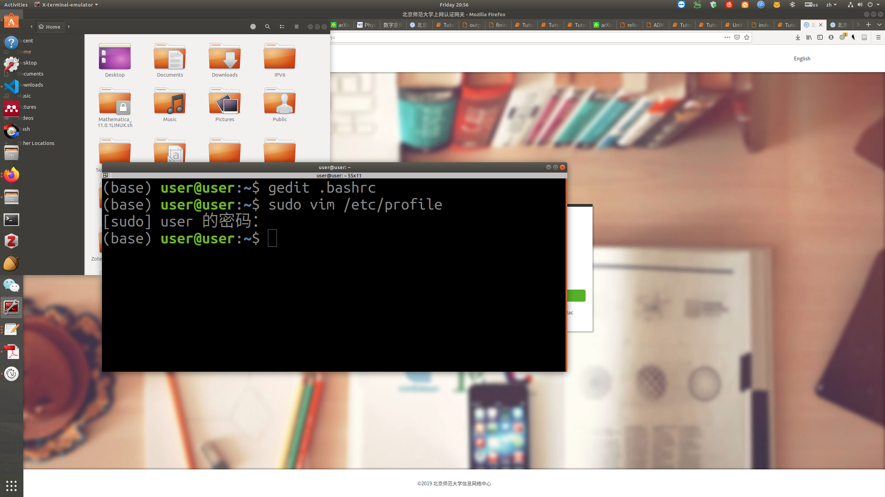
2.在文件最后插入 export PATH=~/anaconda3/bin:$PATH，保存并退出即可。
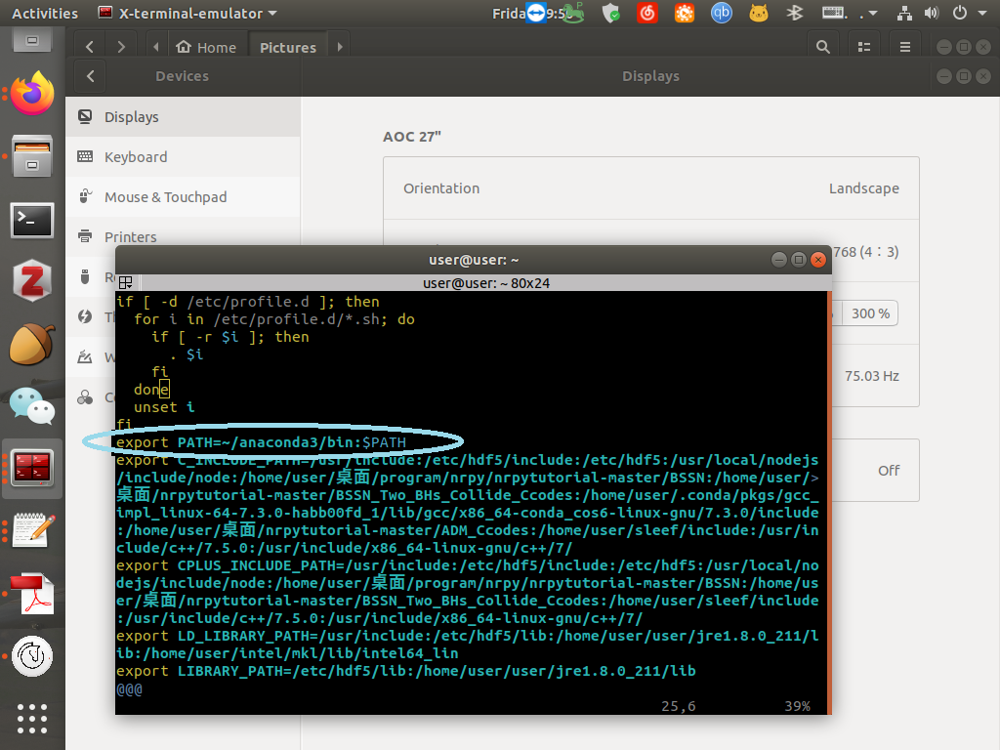
3.6. 模块管理器的安装¶
我们使用Anaconda最主要的目的是使用它进行模块(module)的管理,关于模块我们将在第九章 进行讨论。在使用import语句导入需要包含的模块之前，我们需要使用Anaconda或者pip这样的管理器进行安装。需要说明的是在Windows，Linux以及MacOS中执行安装模块的命令都是一样的。以numpy模块为例：
Anaconda
在终端中输入 conda install numpy 并按下 Enter 即可。类似的，输入 conda install -c conda-forge notebook 可以安装jupyter notebook.
pip
在终端中输入 pip install numpy 并按下 Enter 即可。
在执行这条命令前请确认只安装了Python3.x，虽然我们可以设置同时安装python2.x对应的pip2与pip3，但是鉴于python2.x已经于2020年1月停止维护的事实，除非某些模块必须使用python2.x，否则我们不建议你这样做。具体请搜索 `python pip2与pip3如何共存`。
3.7. 总结¶
从现在起，我们将假定你已经在你的系统中安装了Anaconda Python，和对应的编辑器。接下来，我们将要撰写我们的第一个 Python 程序。